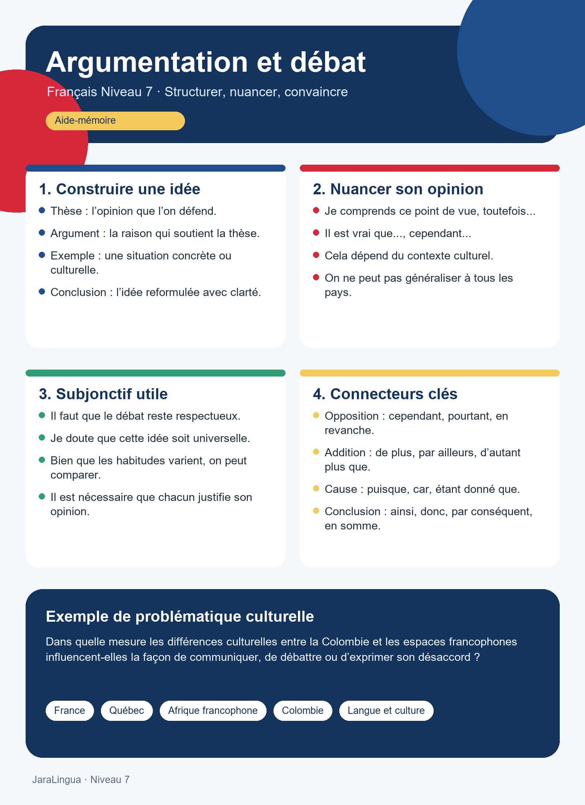

Une thèse
La thèse est l’idée principale que l’on défend. Elle doit être compréhensible dès le début.
Défendre une idée, nuancer son opinion et comparer des réalités culturelles avec précision.
Dans cette unité, l’objectif n’est pas seulement de dire si l’on est d’accord ou non. Il faut apprendre à organiser une opinion, à justifier une position, à reconnaître les limites d’un argument et à utiliser le subjonctif dans des phrases qui expriment la nécessité, le doute, la volonté ou le jugement.

Repères essentiels
Argumenter, c’est présenter une idée de manière structurée pour la rendre compréhensible, crédible et nuancée. Dans un débat, on ne cherche pas uniquement à parler plus longtemps que les autres : on apprend à construire une pensée claire.
La thèse est l’idée principale que l’on défend. Elle doit être compréhensible dès le début.
Les arguments expliquent pourquoi la thèse est raisonnable, pertinente ou discutable.
Les exemples rendent l’argument plus concret : une situation, une expérience ou une comparaison culturelle.
La conclusion reformule la position et montre le lien logique entre les idées présentées.
Organisation du discours
Une bonne argumentation donne au lecteur ou à l’auditeur un chemin à suivre. Le contenu peut être personnel, mais la structure doit rester claire.
Production collective
Après avoir étudié la structure d’une prise de position, les connecteurs, la nuance culturelle et le subjonctif, la classe prépare une argumentation commune. L’objectif est de passer d’une idée générale à un texte organisé, défendable et clair.
Faut-il que les étudiants apprennent à comparer les cultures avant de voyager ou de participer à un échange international ?
Cette question permet de réutiliser les idées de la séance : argumenter sans généraliser, donner des exemples précis, utiliser des connecteurs et intégrer le subjonctif pour exprimer la nécessité, le doute ou la concession.
Nous défendons l’idée que la préparation culturelle est utile avant un voyage.
Elle aide à éviter les malentendus et à respecter les pratiques sociales différentes.
Par exemple, la façon de refuser, de saluer ou de prendre la parole varie selon les contextes.
En conclusion, comparer les cultures prépare mieux les étudiants si la comparaison reste nuancée.
Thème central
Les différences culturelles entre la Colombie et les espaces francophones peuvent servir de point de départ pour construire des exemples. L’objectif est de comparer avec respect, sans réduire une culture à un cliché.
On peut comparer la manière de saluer, d’exprimer un désaccord, de prendre la parole, de gérer le temps, de formuler une demande ou de montrer la politesse.
Exemple guidé
Il est possible que certaines habitudes de communication paraissent plus directes dans un contexte francophone, tandis qu’en Colombie la relation personnelle peut jouer un rôle plus visible.
Une comparaison culturelle doit rester prudente. Il vaut mieux utiliser des expressions qui laissent de la place aux variations individuelles, régionales et sociales.
Point de langue
Au Niveau 7, le subjonctif n’est pas seulement une forme à conjuguer. Il devient un outil pour exprimer une attitude face à une idée : nécessité, doute, volonté, émotion, jugement ou concession.
Aller à l’atelierDéclencheurs utiles
Le subjonctif apparaît souvent après que, lorsque la phrase exprime une réaction subjective ou une idée qui n’est pas présentée comme un fait certain.
il faut que · il est nécessaire que
Il est nécessaire que chaque argument soit accompagné d’un exemple.
je doute que · je ne pense pas que
Je ne pense pas que la politesse se manifeste partout de la même manière.
je souhaite que · j’aimerais que
J’aimerais que la discussion montre plusieurs points de vue francophones.
bien que · quoique
Bien que les cultures soient différentes, certaines valeurs peuvent se rejoindre.
Nuance et cohérence
Les connecteurs logiques servent à guider l’argumentation. Ils montrent si l’on ajoute une idée, si l’on oppose deux points de vue ou si l’on arrive à une conséquence.
Pratiquer en débat culturel Lire et débattre| Fonction | Connecteurs | Exemple |
|---|---|---|
| Ajouter | de plus, par ailleurs, d’autant plus que | De plus, les habitudes de communication varient selon les régions. |
| Opposer | cependant, pourtant, en revanche, néanmoins | Cette idée semble convaincante ; cependant, elle reste trop générale. |
| Expliquer | car, puisque, étant donné que | Il faut nuancer, puisque chaque contexte social est différent. |
| Conclure | ainsi, donc, par conséquent, en somme | En somme, comparer les cultures demande de la précision et du respect. |
Phrases modèles
À ce niveau, l’étudiant doit éviter les réponses trop courtes comme je suis d’accord ou je ne suis pas d’accord. Il doit ajouter une raison, une nuance et un exemple.
Selon moi · À mon avis · Il me semble que
Selon moi, les différences culturelles enrichissent la communication, à condition qu’on les observe sans jugement.
Il est vrai que..., mais · Cela dépend de
Il est vrai que certaines pratiques semblent différentes, mais cela dépend aussi de l’âge, de la région et du contexte.
Autrement dit · En d’autres termes
Autrement dit, comparer deux cultures ne signifie pas décider laquelle est meilleure.
À surveiller
Ces erreurs ne concernent pas seulement la grammaire. Elles touchent aussi la qualité du raisonnement et la manière de présenter une comparaison culturelle.
Dire les Français sont... ou les Colombiens font toujours... ferme le débat. Il vaut mieux préciser le contexte.
Une opinion sans exemple reste abstraite. L’exemple permet de montrer que l’argument est observable.
Un fait peut être vérifié ; une opinion doit être défendue. Dans un débat, il faut distinguer les deux.
Résumé visuel
Cette infographie résume la structure d’une idée, les formules de nuance, les déclencheurs utiles du subjonctif et une problématique culturelle possible.
Télécharger l’infographie
{kind=link}